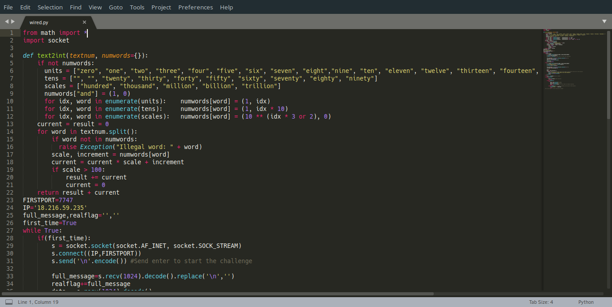
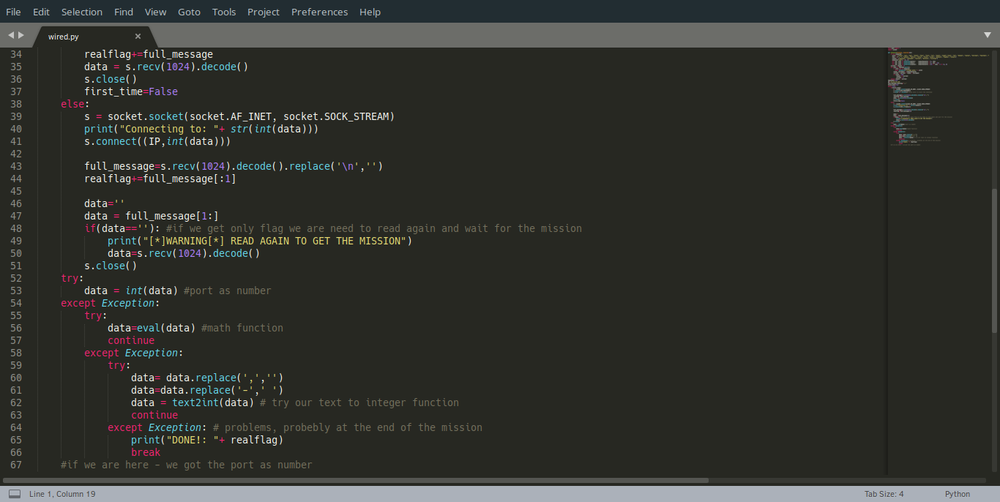

At first, you get an IP and a port – (“18.216.59.235”,7747).
I first tried to connect it with nc, they wrote that I need to solve their
challenge and every challenge is a letter I get with the mission.
I saw three types of missions they want me to do:
- A text of numbers (e.g. “Two thousand, one hundred and seven”) - and I needed to translate it t number (e.g. 2107).
- A math function, to be ran on python like:
floor(((109 << 31) - 38) % -148) % 65535(Answer is 65453). - A number to be translated to Text(what I thought in first sight).
Then, I tried to send the answer to the server in the same connection, and it didn’t work. After a bit of thinking and friend’s helping, I suddenly remember what ‘knocker’ means. Port knocking is way of checking ports on the server by sending them some data and wait for them to answer, So in this case, the ports are the numbers we get, so after translating by our format (text of numbers = port, math function=port, and number=port(Just take that number as a port)) we are going to try to connect these ports by sockets from our code. The connections with the server are little bit tricky because sometimes the message come without the letter or the mission and then the code needs to wait. This is the code I used for get the flag:
 
The flag is: RC3-2017{i-am-the-0ne-wh0-kn0ckz}